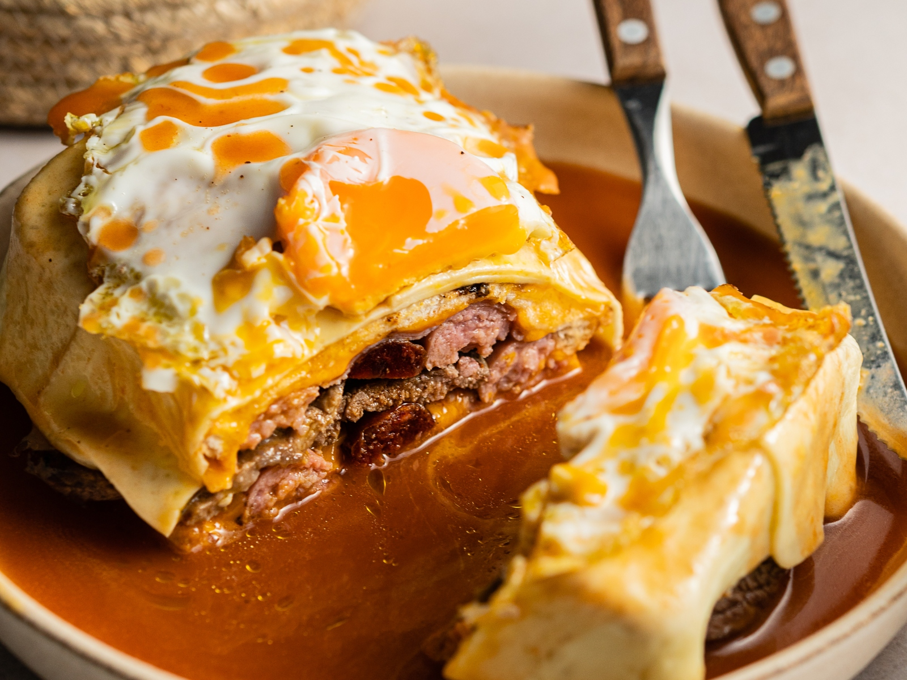

Francesinha Recipe

Description
This is one of the most appreciated dishes and is the signature of Porto. Francesinha is a kind of a delicious sandwich with two slices of bread interspersed by steak, ham and sausage, covered with Edam and a secret and spicy sauce. It’s served with chips and optionally with a fried egg on the top. It’s also known as Little French or Frenchie.
The History tell us that Francesinha was invented in 1960s in Alentejo by Daniel da Silva, an emigrant from France and Belgium that wanted to adapt the croquet-monsieur dish to the Portuguese cuisine. But in the region the dish was not appreciated, so when its creator moved to Porto, he served the Francesinha and it became very popular there. In Porto the people are used to complement the meal with a fino (beer).
Despite being a typical dish, each restaurant has its own recipe of Francesinha. Many of them argue that the secret is in the sauce, while others says that the secret is in on the quality of the ingredients. Whatever is the secret, the truth is that this is a delicious dish and easy to do at home.
Ingredients
Sandwich
- 2 sausages fresh
- 2 steaks
- 4 slices bread
- 10 slices edam cheese
- 4 slices ham
Sauce
- 1 onion
- 4 cloves garlic
- 300 ml olive oil
- 3 bay leaves
- bacon
- 6 soup spoons potato
- 1 chili fresh
- 450 ml beer
- 50 ml whisky
- 50 ml port wine
- 1 meat stock
- Salt
- Pepper
Steps
Sandwich
- Cut the sausages lengthwise. Meanwhile season the steaks with salt and pepper.
- Grill the sausages first and then the steaks so they stay medium rare. To grill the sausages use vegetable oil and butter to grill the steaks.
- Start making the Francesinha with this order: slice of bread, slice of cheese, one of ham, the steak, the sausages and finally a bread slice. Finish covering the Francesinha with cheese. Repeat the process to the other one.
- Go to the oven until the cheese is melted.
- Fry the eggs and put them on the top of sandwiches.
Sauce
- Put olive oil, chopped garlic, chopped onion, bay leaves, salt and pepper, in a pan. Let it cook.
- Add beer, tomato sauce, chili, whisky, Port wine, meat stock and bacon or pork fat.
- Let boil 10 minutes mixing well.
- Remove the bay leaves and mix all the ingredients with the hand blender.
- Cover the Francesinhas with hot sauce before serve.